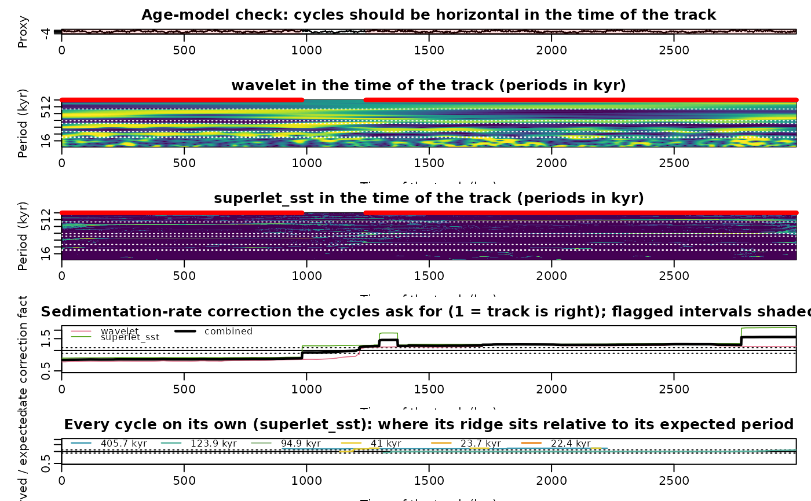

Check an age model against the de-chirped record: where do the astronomical cycles bend away?
Source:R/check_agemodel.R
check_agemodel.RdAn existing track (a tracked period curve, a sedimentation-rate curve or an age model, see
as_wr_track) is used to de-chirp the record with analyse_dechirped: in the time of the
track every astronomical cycle should be a horizontal line at its period. Wherever the track is wrong the lines bend
away from the expected periods, and the local offset of the ridge gives the correction of the sedimentation rate
that the record itself asks for: an observed period P_obs where P was expected means the true rate is
P_obs / P times the tracked rate (the track ran through that interval too fast or too slowly by that factor). The offset is measured per cycle and per transform (the smooth Morlet
wavelet, the multitaper EHA, the superlet-SST, the chirplet-SST and the combined map each see the ridges
differently). The offset is found by a comb search: a wrong rate shifts every cycle by the same factor, so the
log-power at all expected periods is summed for every common shift of the comb (as the harmonic product spectrum
of pitch detection does) and the best shift is the correction; the cycles are then checked one by one at that
shift. The corrections are combined by a weighted median and an interval is flagged when the combined
correction exceeds tolerance with at least min_cycles cycles and min_transforms transforms
agreeing on its direction. Optionally a blind chirp-matched re-track (track_astro_auto) is run for
comparison.
Usage
check_agemodel(
data,
track,
age_ma = 0,
astro_periods = NULL,
transforms = c("wavelet", "eha", "superlet_sst", "chirplet_sst"),
band = 0.3,
max_shift = 1.2,
tolerance = 0.1,
min_cycles = 2,
min_transforms = 2,
min_strength = 1.5,
min_contrast = 1.5,
eha_window = NULL,
n_max = 6000,
clip = TRUE,
min_length = NULL,
harmonics = TRUE,
retrack = TRUE,
sedrate = NULL,
dj = 1/50,
verbose = TRUE,
...
)Arguments
- data
Record to check (matrix or data frame): depth in column 1 and the proxy in column 2, in the same depth unit as
track; incomplete rows are dropped and the rows are sorted by depth. Required, no default.- track
The existing age model as a track: a
wr_trackdata frame with columnsdepth,sedrate(depth units per kyr) andtime(kyr), e.g. fromas_wr_track, or the output oftrack_astro_auto. Required, no default.- age_ma
Age of the record in Ma (numeric, 0 to 4429), used to pick the astronomical periods with
astro_periods_trackingwhenastro_periodsisNULL, and passed totrack_astro_autofor the blind re-track.Default=0.- astro_periods
Periods of the astronomical cycles to measure, in kyr (numeric vector, at least two values); cycles shorter than 2.5 times the sample spacing in the time of the track are dropped.
NULLuses the 405.7, 123.9 and 94.9 kyr eccentricity cycles, the strongest obliquity term and the two strongest precession terms forage_ma.Default=NULL.- transforms
Transforms of
analyse_dechirpedon which the offsets are measured (character vector, any of"wavelet","superlet_sst","wavelet_sst","chirplet_sst","eha","combined"); each is computed separately, so fewer transforms run faster.Default=c("wavelet", "eha", "superlet_sst", "chirplet_sst").- band
Half-width of the band around each (shifted) expected period in which the ridge of that cycle is looked for, in octaves (numeric, > 0); it is narrowed to half the distance to a neighbouring cycle where two cycles are closer.
Default=0.3.- max_shift
Largest common shift of the comb that is searched, in octaves (numeric, > 0), i.e. a rate error of up to a factor
2^max_shifteither way; a best shift at the edge of the search grid is discarded.Default=1.2.- tolerance
Relative rate correction above which an interval is flagged (numeric, > 0;
0.1means a correction factor above 1.1 or below 1/1.1).Default=0.1.- min_cycles
Minimum number of cycles (integer) whose ridges must support a correction for an interval to be flagged.
Default=2.- min_transforms
Minimum number of transforms (integer) that must agree on the direction of a correction larger than
tolerancefor an interval to be flagged.Default=2.- min_strength
Minimum ridge prominence for an offset to count (numeric, > 1): the ratio of the maximum in the band to the median of the time column; the squeezed transforms (
"superlet_sst","wavelet_sst","chirplet_sst") use a tenth of it on their sparse maps.Default=1.5.- min_contrast
Minimum contrast of the best comb shift for a time column to count (numeric, > 0): the score of the best shift above the median score over all shifts, in median absolute deviations.
Default=1.5.- eha_window
Window length of the multitaper EHA, in kyr of the track (numeric, > 0); passed as
windowtoanalyse_dechirpedand only used by"eha"and"combined".NULLuses 2.5 times the longest cycle (at most a third of the duration of the track), so that the 405-kyr cycle is resolved.Default=NULL.- n_max
Maximum number of samples (integer); a longer record is smoothed with a moving average and resampled to
n_maxevenly spaced depths before the transforms, to keep the run time down.Default=6000.- clip
Restrict the record to the depth range of
track(logical, TRUE or FALSE); beyond that range the track would be extrapolated with its end rates, which can dominate the time axis.Default=TRUE.- min_length
Shortest flagged interval that is kept, and longest gap between two flags of the same sign that is closed, in kyr of the track (numeric, >= 0).
NULLuses half the longest cycle.Default=NULL.- harmonics
Add the 202.9 and 135.2 kyr harmonics of the 405.7-kyr cycle to the comb with weight 0.4 (logical, TRUE or FALSE), so that a non-sinusoidal long eccentricity cycle is not read as shifted 124 and 95 kyr cycles; only used when a 405-kyr cycle is in
astro_periods.Default=TRUE.- retrack
Also run a blind chirp-matched re-track with
track_astro_auto(method="chirp") for comparison (logical, TRUE or FALSE); its rate is added to the profile assedrate_retrack.Default=TRUE.- sedrate
Range of the sedimentation rate searched by the blind re-track,
c(lower, upper)in depth units per kyr (numeric vector of length 2); only used whenretrack=TRUE.NULLuses half the lowest to twice the highest rate oftrack.Default=NULL.- dj
Spacing of the period axis, and of the grid of comb shifts, in octaves (numeric, > 0; smaller is finer but slower); passed to
analyse_dechirpedandtrack_astro_auto.Default=1/50.- verbose
Print progress messages (logical, TRUE or FALSE).
Default=TRUE.- ...
Further arguments passed to
analyse_dechirped(e.g.omega_nr,n_sim,seed) and from there to the transform function;lowerPeriod,upperPeriod,djandwindoware set bycheck_agemodeland cannot be given here.
Value
A list of class wr_agemodel_check: profile (data frame with depth, time,
sedrate of the track, one column of log2 rate correction per transform, correction (the combined
factor), n_cycles, n_transforms, flag), intervals (data frame of the flagged
intervals: from, to, correction, cycles, transforms), offsets (per
transform: shift, the comb shift per time column; offset, the log2 offset of every cycle at that
shift; offset_single, the offset of every cycle searched on its own around its expected period), dechirped (the wr_dechirped objects),
retrack (the blind track, if run), astro_periods, track, data.
Details
The measured correction is only as good as the ridges: a cycle that is not expressed in the record gives no
offset (its strength falls below min_strength and it is dropped), and an interval flagged by one weak
cycle alone is not flagged. The flagged intervals are a list of places to look at in the maps of
plot_agemodel_check, not a new age model; use track_astro_auto or
track_chirp_hmm to re-track.
Examples
# \donttest{
set.seed(1)
t <- seq(0, 3000, 1)
x <- cos(2 * pi * t / 405) + 0.8 * cos(2 * pi * t / 100) + 0.6 * cos(2 * pi * t / 41) +
rnorm(length(t), 0, 0.8)
rate <- ifelse(t < 1500, 0.05, 0.08) # a step in the rate the age model does not know
z <- cumsum(rate)
data <- data.frame(z, x)
track <- as_wr_track(data.frame(z, 0.065), "sedrate") # a constant-rate age model
chk <- check_agemodel(data, track, age_ma = 0, transforms = c("wavelet", "superlet_sst"),
retrack = FALSE)
#> check_agemodel: wavelet
#> check_agemodel: superlet_sst
chk$intervals
#> from to correction cycles transforms
#> 1 0.05 63.81 0.744 4 2
#> 2 80.69 195.01 1.263 4 2
plot_agemodel_check(chk)

# }